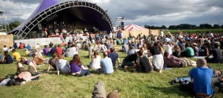

The All-stars warm up with a tour!
TRUCK ALL-STARS WARM-UP SHOWS By day we’re busy getting Hill Farm ready for Truck Festival, by night from July 4th we’ll be playing a series of festival warm-up shows with our band The Dreaming Spires. Taking two other Truck Festival acts out on the road with us, Two Fingers of Firewater and James Walbourne, we’ll be bringing a little taste of the (read more)
Benjamin Francis Leftwich
Since his early beginnings in York, Ben has established himself as a formidable singer songwriter and has already accumulated a huge following as well as gaining support from Zane Lowe, (read more)
Days, times and stages announced!
Has all that wall-to-wall Glastonbury coverage whetted your festival appetite, like it has ours? Or maybe, like Joe and Chris Bennett, you were actually there - Joe even joined Stornoway on (read more)
BBC Introducing Stage announced!
This year Truck will be partnering with BBC Oxford Introducing showcasing some of the best bands Oxford has to offer. Truck has always been at the centre of home grown (read more)
History Of Truck
This year Truck will be celebrating its fourteenth consecutive festival. Since the very beginning in 1998, Truck has been established as Oxford’s best music festival supporting the city’s infamous music (read more)